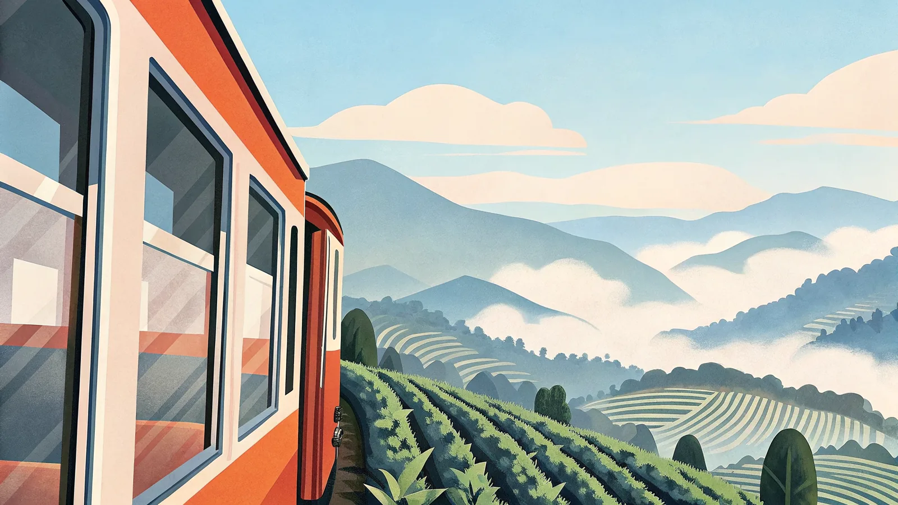

旅行・観光の基本情報
スリランカ民主社会主義共和国の旅行ガイド
World Mappy


まだ知名度は高くないが、紅茶・遺跡・野生動物・ビーチを一度に楽しめる旅先として近年じわじわ人気上昇中。2026年5月からは日本を含む40カ国向けにETA（電子渡航認証）の観光目的の手数料が無料化され、渡航のハードルはさらに下がった。
スリランカは島のどちら側にいるかで季節が逆転する珍しい国。西・南海岸（コロンボ・ゴール・ミリッサ方面）は12〜3月が乾季でベストシーズン、東海岸（トリンコマリー方面）は5〜9月がベストシーズン。中央高地のキャンディ・エラは標高が高く年間を通じて過ごしやすいが、雨も多め。
色が濃いオレンジほど気温が高いことを示しています。
ベスト：12月〜3月（乾季・海も穏やか）／ 5〜9月は雨季でビーチコンディションが悪化。
ベスト：1〜4月・7〜9月（比較的乾燥）／ 通年で朝晩は涼しく紅茶畑の緑が美しい。
ベスト：1〜3月・7〜9月（乾燥・冷え込み対策必須）／ 通年で朝晩は10°C近くまで下がる。
成田直行便はスリランカ航空の週4便のみで年間を通じて価格変動が少なめ。GW・お盆・年末年始は高騰するので、旧正月明けの2月や6月・9月の閑散期が狙い目。乗り継ぎ便を使えば選択肢と価格の幅が広がる。
獅子旗。中央のライオンはシンハラ民族を象徴し、周囲の菩提樹（ぼだいじゅ）の葉が仏教国であることを示す。
人気の観光地から穴場まで、実際に行って良かった場所を厳選してまとめました。